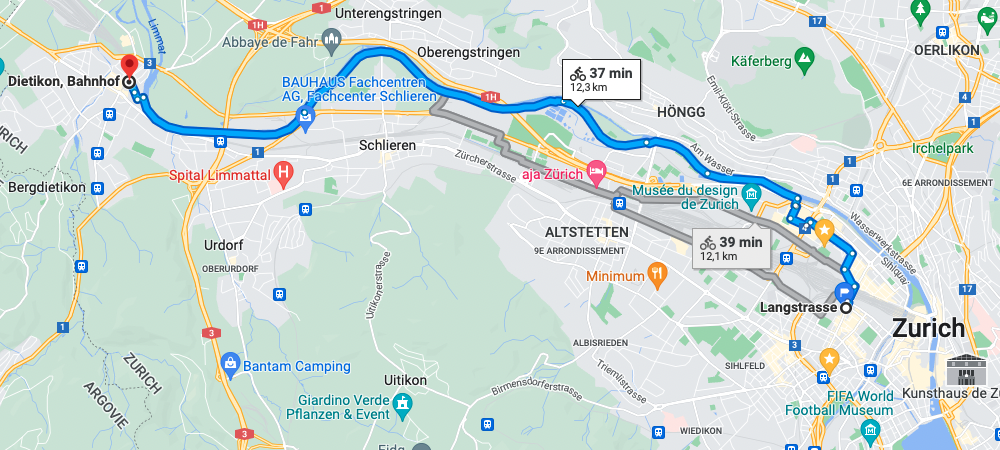
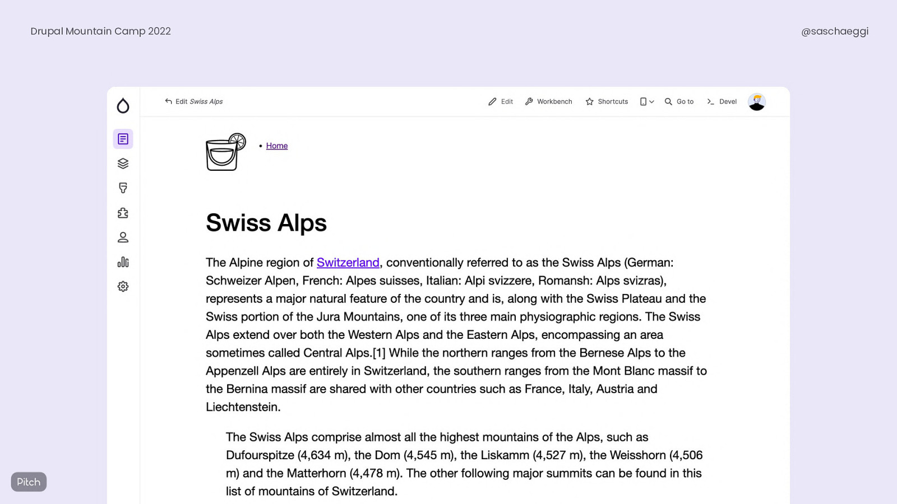
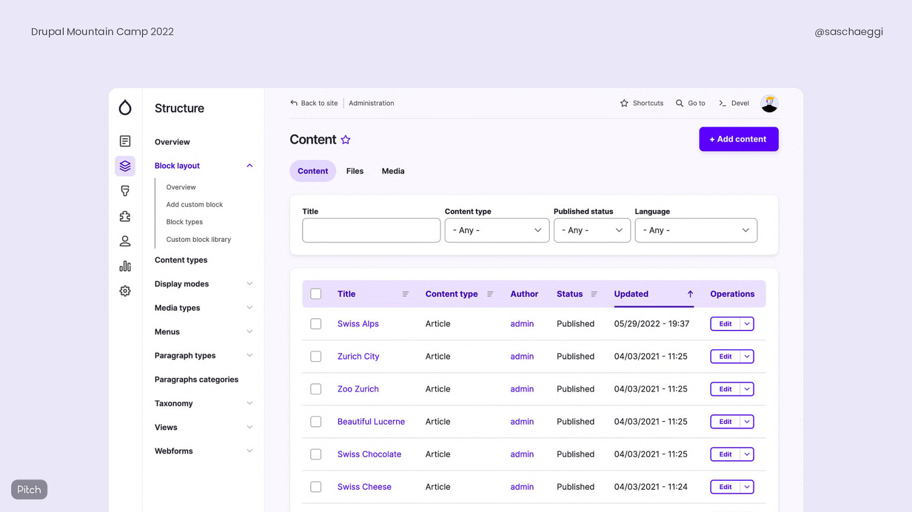
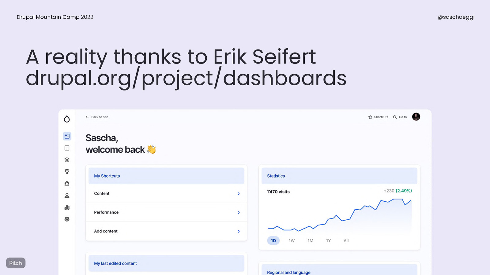

Mountain Camp 2022
Mountain Camp 2022
Récap
- Féderer l'apprentissage de Drupal
- Contribuer en tant que société
- Entity API
- Gin
- Soft decoupling
- Drupal 10
- ECA
👋
- Développeur Full Stack @AmazeeLabs Zürich
- Drupal, Gatsby/React, GraphQL, Ansible
- Drupal depuis 2008
- @colorfield
🙌 Pré-camp
Canton de Zürich
Limmat ⛵

Canton de Lucerne
Schüpfheim, Farnere
Zürich > Davos
🚂 🚃🚃🚃🚃🚃 (~2h30)Canton des Grisons
Davos, Schatzalp
Fédérer l'apprentissage de Drupal
Objectif
Ne plus dupliquer les efforts pour identifier les ressources d'apprentissage pour les nouveaux venus en agence
Moyens
- Groupe d'apprentissage:
Coordination, partager les ressources - Catalogue de ressources basé sur le profil
Contribuer en tant que société
Faits
- Drupal est mature, les agences l'utilisant son durables
- Moins de temps de contribution
- Nous avons besoin de plus de contributions pour rester compétitifs
Objectifs
- Nous devrions passer de 40 à 200 contributeurs à plein temps
- Impliquer plus de créateurs que de preneurs
- Reconnaissance des créateurs (Drupal certified partner program)
- Contributions sponsorisées
Comment
- Initiatives stratégiques
- Design / UX
- Documentation
- Traduction
- Planification d'événements
- Code
- Mentoring
- Test
- Marketing
Entity API
SlidesRelations
Syntaxe à points
$ids = $nodeStorage->getQuery()
->condition('uid.entity.roles', 'administrator', '=')
->execute();
Access check
Drupal 10 nécessitera de le mentionner
Avoid using `loadByProperties` to load entities in #Drupal!https://t.co/pb7QWbE51y pic.twitter.com/HFMxxcy3Eh
— Matt Glaman (@nmdmatt) April 12, 2022
$ids = $nodeStorage->getQuery()
->condition('type', ['page', 'article'], 'IN')
->accessCheck(TRUE)
->execute();
Link template
$url = $entity->toUrl('canonical');
$link = $entity->toLink('Edit', 'edit-form');
$url = Url::fromRoute(
'entity.node.canonical',
['node' => $entity->id()]
);
$link = Link::createFromRoute(
'Edit',
'entity.node.edit_form',
['node' => $entity->id()])
);
https://www.drupal.org/docs/drupal-apis/entity-api/link-templates
Révisions
Surcharge de la création d'une nouvelle révision par défaut
$entity->setSyncing(TRUE);
$entity->save();
Bundle class
- Classe spécifique pour le bundle au lieu d'utiliser la class du type d'entité
- Peuvent être utilisées pour généraliser des méthodes
- Example: dans les template Twig, remplacent le pre-process pour ce cas
- Drush 11 a un générateur de Bundle class
Sans bundle class
namespace Drupal\custom_node\Entity;
use Drupal\node\Entity\Node as CoreNode;
class CustomNode extends CoreNode {
// Implement whatever business logic specific to basic pages.
public function hasHighlightCategory(): bool {
if ($this->get('field_category')->entity) {
return $this->get('field_category')->get('entity')
->get('field_highlight')->value;
}
return FALSE;
}
}
Effet de bord sur tous les node, la class Node devient CustomNode, de manière globale.
Avec bundle class
class BasicPage extends Node implements BasicPageInterface {
// Implement whatever business logic specific to basic pages.
public function hasHighlightCategory(): bool {
if ($this->get('field_category')->entity) {
return $this->get('field_category')->get('entity')
->get('field_highlight')->value;
}
return FALSE;
}
}
Gin
SlidesClaro
- Base theme de Gin
- Stable et thème admin par défaut sous 9.4.x
- Seven est déprécié
Gin updates (1/2)
- 19 000 installations
- Alpha > Beta
- Refactoring: -81kb, séparation en composants de librairie
- Toolbar secondaire, toolbar verticale améliorée
- Support des langues RTL
- Override simplifié des CSS
Gin updates (2/2)
hook_gin_content_form_routes()
(custom entities)- Dashboard
- Back to site
- Changer la densité du layout
- Suppression du code jQuery
Toolbar
Toolbar
Dashboard
Soft decoupling et Search API
SlidesStack
- Search API DB
- Rest (core)
- View Search API avec Rest export
- React via Drupal libraries
- Block Drupal
Drupal 10
SlidesStatut (1/2)
- CKEditor 4 / Symfony 4 EOL Q4 2023
- CKEditor 4 devient un module contrib sous D10
- D10 est toujours planifié pour une release Q4 2022
Beta 9/9/2022 - Stable 14/12/2022 - D7 sera supporté au moins jusqu'au Q4 2023
- Symfony 6 (D10) supporté jusqu'en novembre 2027
- Potentialité de LTS (2 ans) #3238652
- D10.0 aura les même features que 9.5.x
Statut (2/2)
- Thèmes sous 9.4: par défaut Olivero (frontend) et Claro (backend)
- Ce qui pourrait être sous 9.5.x
- 10.1 pourrait avoir les menus découplés et le project browser
PHP
- 8.0 - 9.1.0
- 8.1 - 9.3.0 (Symfony 6.1)
- 8.2 - wip
jQuery UI
Reste dans le core #3067261
DB
SQLite vient avec l'extension json, MySQL reste 5.7.8+
Upgrade 9 > 10
- Upgrade Status: fait plus que Drupal check et PHPStan
- Automatisation: Status indique quand utiliser Rector
- Project update bot redémarré depuis mi-juin
- Update vers 9.4 (définit toutes les déprécations, donc on peut utliser rector maintenant) et PHP 8.1
- Update contrib / custom
- Statut des déprécations
- Composer Lenient permet de forcer la compatibilité #3240297
Distributions > Recettes
Drupal recipes allow the automation of Drupal module install and configuration via the user interface and via the Drupal recipe composer plugin.
- Composables
- Drupal Slack #distributions-and-recipes
- #3274999
Event Condition Action
SlidesECA
- Successeur de Rules
- Projet https://www.drupal.org/project/eca
- Basé sur bpmn.io
- Blog: https://bpmn.io/blog/posts/2022-drupal-eca-integration.html
ECA
Démo
ECA
Drupal Slack: #eca